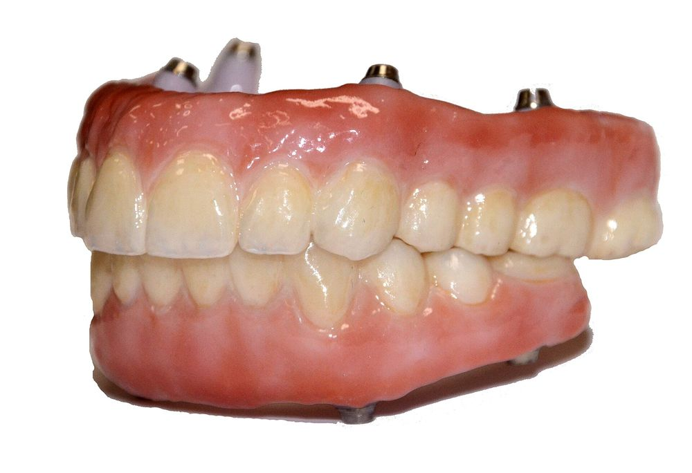
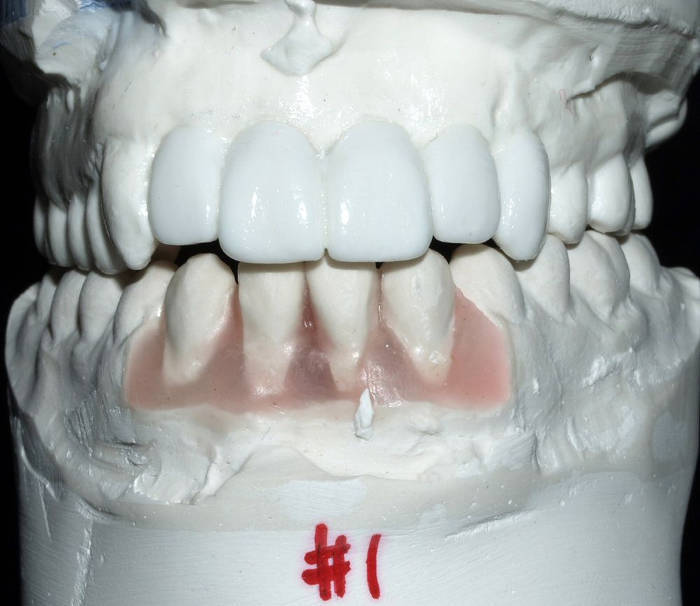
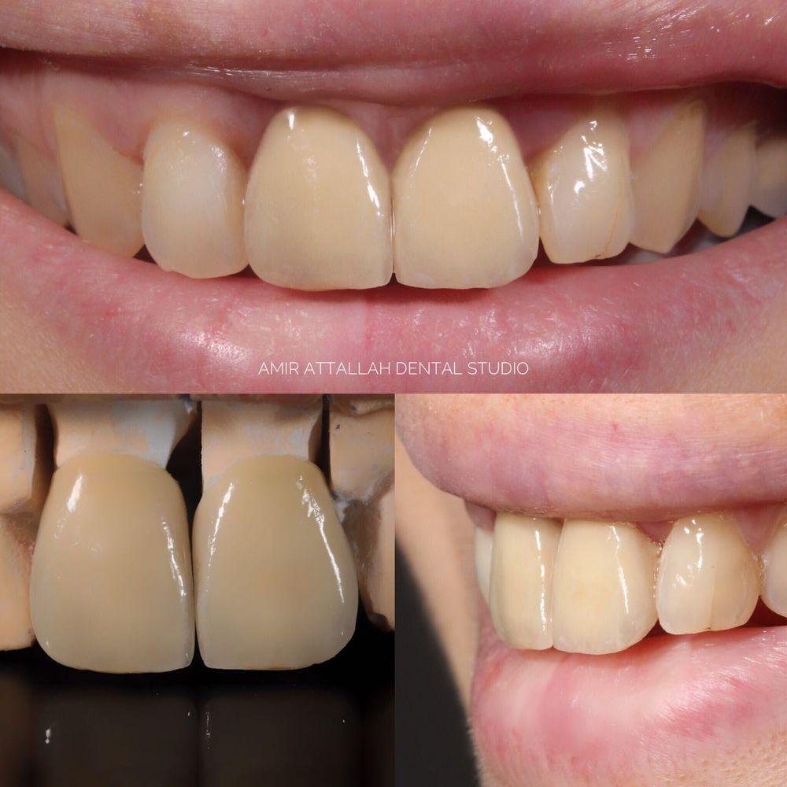
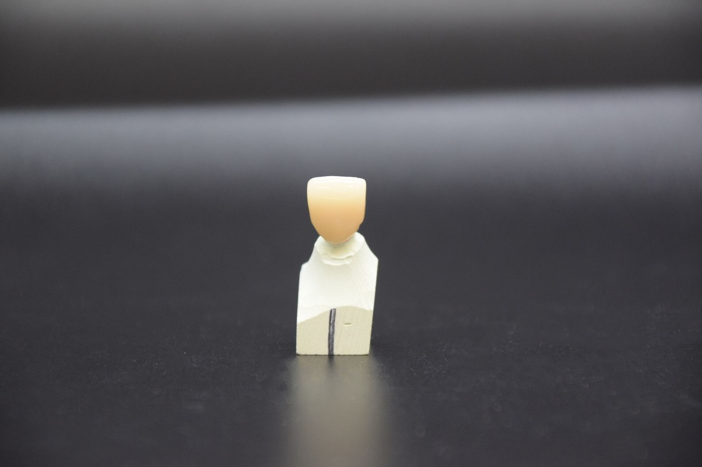

01Digital
Flujo CAD/CAM completo: recepción de escaneos intraorales, diseño en software y fabricación por impresión 3D y fresado.
Laboratorio dental multiservicios
Diseñamos y fabricamos restauraciones y prótesis para clínicas y odontólogos que exigen exactitud técnica y una estética natural. Del escáner a la pieza terminada.
CÓNDOR
DENTAL LAB

01Flujo CAD/CAM completo: recepción de escaneos intraorales, diseño en software y fabricación por impresión 3D y fresado.

02La técnica clásica que no falla: modelos en yeso, articulador, enfilado, enmuflado y colados con control manual en cada paso.

03Caracterización, maquillaje y estratificación cerámica para que cada pieza se integre en la sonrisa como un diente natural.
Servicios
Diseño digital de coronas, puentes, carillas y encerados a partir de tus archivos STL.
Modelos de trabajo, guías, provisionales y patrones calcinables en resina de alta resolución.
Zirconio, disilicato de litio y metal-cerámica, con ajuste marginal preciso.
Prótesis totales y parciales removibles, enmufladas y terminadas a mano.
Colados y estructuras para puentes y esqueléticos con acabado y pulido fino.
Encerados diagnósticos para planificar y presentar el tratamiento al paciente.
Maquillaje y capas de cerámica para reproducir color, translucidez y textura.
Registro y montaje de modelos para una oclusión funcional y estable.
Proceso
Nos envías el escaneo intraoral o las impresiones físicas con las indicaciones del caso.
Planificamos y diseñamos la restauración, digital o encerada, y la revisamos contigo.
Imprimimos, fresamos, colamos o procesamos según el material elegido.
Caracterizamos, pulimos y verificamos el ajuste antes de entregar.
Trabajos
Por qué Cóndor
Somos un laboratorio que une la tecnología digital con la mano del técnico. Cada caso se revisa de principio a fin por la misma persona, con comunicación directa con el odontólogo.

Contacto
Cuéntanos qué necesitas: tipo de trabajo, material y plazo. Te respondemos con una propuesta.
Síguenos en Instagram